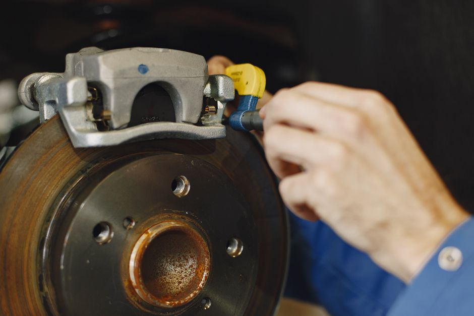
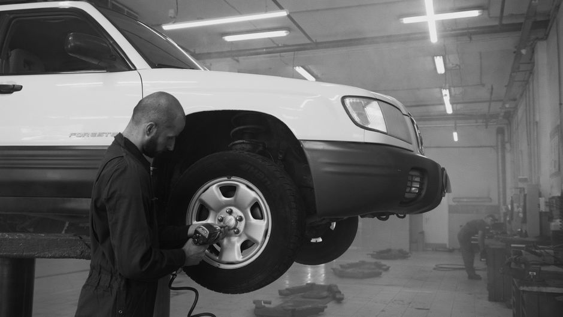

How to Identify and Replace Brake Pads: A Step-by-Step Guide for Non-Mechanics
Brake pads are an essential part of your car’s braking system, and regular maintenance is crucial to ensure safe driving. This guide will walk you through identifying and replacing brake pads, step-by-step, so you can keep your vehicle running smoothly and safely.

Photo: Gustavo Fring / Pexels
Tools and Materials Needed
Before you start, make sure you have the following:
- Safety gear: gloves, safety glasses, and a dust mask
- Jack and jack stands
- Torque wrench
- Socket set
- Lug wrench
- Brake pad replacement kit
Step-by-Step Process
Step 1: Prepare Your Vehicle
- Park the car on a flat surface and apply the parking brake. This will help prevent the vehicle from moving during the process.
- Locate the brake fluid reservoir under the hood. Note the fluid level; you’ll need to check this after replacing the pads.
- Jack up the vehicle and place it on jack stands. Start with the wheel that needs the brake pad replacement. Ensure the jack is stable and secure.
Step 2: Remove the Wheel

Photo: Artem Podrez / Pexels
- Use the lug wrench to loosen and remove the lug nuts. Do not remove them completely; just loosen them to allow the wheel to be removed more easily.
- Remove the wheel. Once the lug nuts are loose, you can take off the wheel. Set it aside and keep a close eye on the lug nuts.
Step 3: Inspect the Brake Pad
- Identify the brake pad. The brake pad is attached to the caliper and has a metal backing. It usually has an indicator or a groove that shows when it’s time for replacement.
- Inspect the brake pad. Use a flashlight to look for signs of wear. A brake pad that is less than 1/4 inch (6.35 mm) thick should be replaced.
Step 4: Remove the Old Brake Pad
- Remove the caliper bracket. This is usually held in place with a single bolt or screw. Use a socket and a torque wrench to remove it.
- Use a C-clamp or brake caliper tool to release the caliper. If you don’t have a tool, you might need to remove the caliper to access the brake pad.
- Slide the old brake pad out. Be careful not to damage the backing plate or the brake rotor.
Step 5: Install the New Brake Pad
- Apply a thin layer of brake grease to the new brake pad. This helps with lubrication and reduces noise.
- Insert the new brake pad into the caliper. Ensure it is seated properly and that the metal clips are aligned.
- Reattach the caliper bracket. Tighten the bolt or screw to the manufacturer’s specified torque with a torque wrench.
Step 6: Reinstall the Wheel
- Place the wheel back onto the hub. Make sure it is centered and secure.
- Tighten the lug nuts. Start with one nut, then move to the opposite side and then the remaining nuts, ensuring even tightness. Finally, use a torque wrench to tighten them to the manufacturer’s specified torque.
Step 7: Lower the Vehicle
- Remove the jack stands and lower the vehicle. Double-check all lug nuts to ensure they are properly tightened.
Step 8: Final Checks
- Test the brake pedal. Press the brake a few times to ensure the pads are working properly.
- Check the brake fluid reservoir. Ensure the fluid level is within the safe range and top up if necessary.
Scenario Example
Imagine you're driving home from a long day at work when you notice a strange noise coming from the front of your car. You decide to check the brake pads yourself. You park on a flat surface, apply the parking brake, and jack up the car. Removing the wheel, you inspect the brake pad and find it's only 1/8 inch thick. You grab your tools and follow the steps above, replacing the old pad with a new one and ensuring it is properly lubricated and reinstalled. After lowering the vehicle and testing the brakes, you’re back on the road with renewed confidence.
Conclusion
Replacing brake pads may seem daunting, but with the right tools and a bit of patience, you can do it yourself. Regular maintenance not only ensures your safety but also saves you money in the long run. Follow these steps, and you’ll be well on your way to keeping your car in tip-top shape.
Recommended products
As an Amazon Associate, I earn from qualifying purchases.